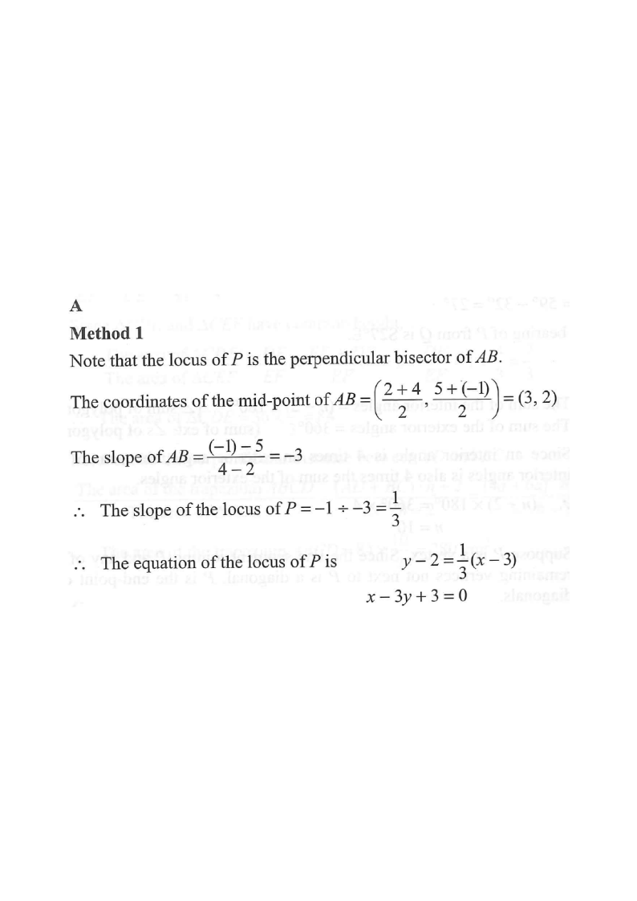

The coordinates of the points $A$ and $B$ are $(2,\ 5)$ and $(4,\ -1)$ respectively. Let $P$ be a moving point in the rectangular coordinate plane such that $AP = BP$. Find the equation of the locus of $P$.

We are given $AP = BP$, i.e. $P$ is always equidistant from $A$ and $B$.
Recall the standard result: the set of all points equidistant from two fixed points $A$ and $B$ is the perpendicular bisector of the segment $AB$.
So the locus of $P$ is a straight line — and we expect it to be perpendicular to $AB$ and to pass through the mid-point of $AB$.
Mid-point formula:
$$M = \left(\frac{x_A+x_B}{2},\ \frac{y_A+y_B}{2}\right)$$ $$M = \left(\frac{2+4}{2},\ \frac{5+(-1)}{2}\right) = (3,\ 2)$$So the locus line must pass through $(3,\ 2)$.
Slope of $AB$:
$$m_{AB} = \frac{-1 - 5}{4 - 2} = \frac{-6}{2} = -3$$Since the locus is perpendicular to $AB$,
$$m_{\text{locus}} = -\frac{1}{m_{AB}} = -\frac{1}{-3} = \frac{1}{3}$$Use point-slope form with $M(3,2)$ and slope $\tfrac13$:
$$y - 2 = \tfrac{1}{3}(x - 3)$$ $$3(y - 2) = x - 3$$ $$3y - 6 = x - 3$$ $$x - 3y + 3 = 0$$